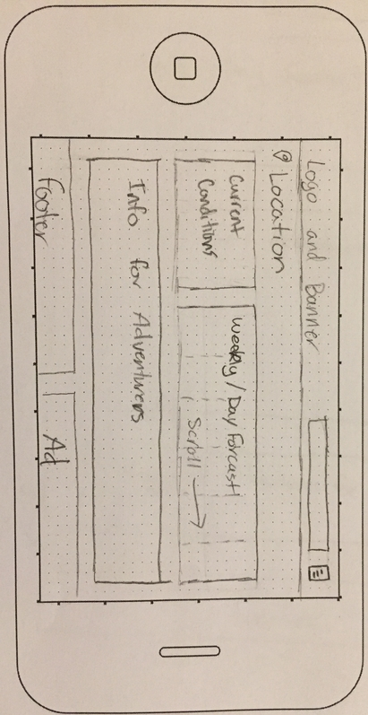

Audience
The main audience for this website will be outdoor adventurers. The expected audience will be between 18-30 from all over the United States. The users will come from all kinds of backgrounds with a wide range of income. This website will include a feature that suggests adventures based on the weather and your location. I think this will be very useful for people who love to get outside and be active and adventurous.
Wire Frames
These are the basic layouts for this website on a large, medium, and small device.

Large screen wireframe

Medium screen wireframe

Small portrait screen wireframe

Small landscape screen wireframe
Persona
Lucy Johnson
- Age: 22
- Education: BS in Communications
- Family Status: Married
Lucy is a professional explorer. Her and her husband get paid to go on adventures everyday, in order to plan their adventures they have to have a good idea what the weather will be so they can plan accordingly. Lucy will use this website to keep watch on the weather so that their adventures will go as planned. Sometimes lucy and her husband get stumped and don't know what to plan for the day, when this happens they can use the suggested adventures feature to help them get ideas.
"What's the plan for today?"

Purpose Statement
This weather website will focus mainly on outdoor adventurers. It will provide an accurate weather guide up to ten days in advance. It will also provide suggestions for adventurers, on what to do based on the weather. I think that this website will be exacly what some people are looking for. Explorers will be able to have all their recources on one site.
Peer Review
I had one of my FHE brothers look over my wireframes, he suggested that I add a menu button to the mobile device sites. I didn't have one but I added it because I think it is probably a good idea.